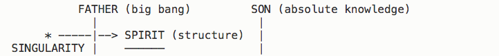

March 25, 2018The Library of the Babel
May 10, 2017Did Lamar Just Kill Hip Hop?
March 19, 2017Essence of Singularity
June 19, 201637 Greatest Albums of All Time
March 16, 2016From Singularity to Morality
Most of my projects are listed on my GitHub profile.
Comp Mark II
Simple 4-bit/1 Hz virtual computer for learning purposes.
Standard Aliases
Attempt at defining standard extension to Linux in form of Bash functions.
Fun Photo Time
Image filtering fun for everyone!
Race!
Racing game for the terminal.
Photography
Six photographs I am not ashamed of.
Music
Six improvisations I should probably be ashamed of :)